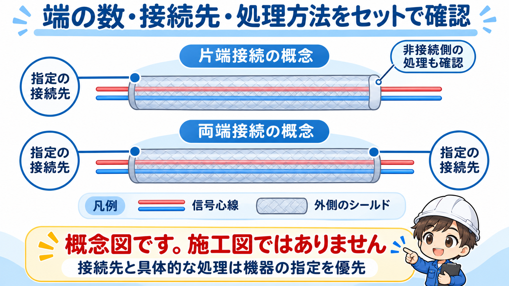
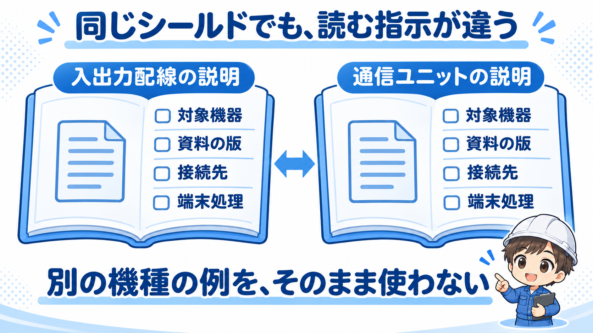
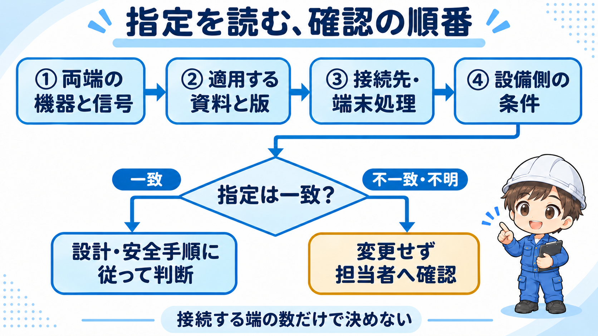

シールド線を接地するとき、「片側だけつなぐ」と聞いたことはありませんか。一方、機器のマニュアルには「両端で接続」と書かれている場合もあります。
どちらか一方が、すべての設備で正しいわけではありません。まず確認したいのは、そのケーブルが何をつないでいて、対象機器の資料がどの接続を指定しているかです。
この記事では、接地先をその場で変更する方法ではなく、図面・機器マニュアル・EMCの注意事項を読み合わせる順番を整理します。シールドの基本構造から確認したい方は「シールド線とは？」を先に読むと理解しやすくなります。
安全上の注意：図は考え方の説明用で、施工図ではありません。実機の配線変更・点検は設備の安全手順と権限に従って行ってください。ノイズを減らす目的でも、保護接地を外してはいけません。
公式資料確認日：2026年11月15日。資料ごとの対象機種・条件を区別しています。
この記事の要点
- 片端・両端という言葉だけでは、接地先や端末処理まで決まらない。
- 同じメーカーでも、入出力配線と通信配線で確認する指示が違うことがある。
- 両端接続を考えるときは、盤や機器の間の電位差とボンディングも別に確認する。
- 資料が食い違う場合は、都合のよい方を選ばず、適用機種・版・接続条件を照合する。

片側だけ接地すれば安心、じゃないんですか？

覚えるなら接地の形より、指定を読む順番だね。同じシールド線でも、つなぐ機器で条件が変わるよ。
1. 片端接地と両端接地は、まず接続する端の違い
ここでは、ケーブルのシールドを指定された接続先へ片方の端で接続する形を「片端接地」、両方の端で接続する形を「両端接地」と呼びます。
シールドを筐体へ接続することと、大地へ接地することは同じ意味ではありません。ここでの呼び方だけで接続先を判断せず、機器資料の用語と接続図を確認します。
図に接地記号があっても、それだけで接続先を決めないでください。端子台、シールドクランプ、コネクタの金属部など、実際の接続位置や処理方法は機器資料で確認します。
「片端」と書かれていることと、接続しない側をむき出しで放置することは別です。非接続側の絶縁などの処理も、対象の配線図・指示に合わせます。
端の数、接続場所、処理方法をセットで読むのが出発点です。

図の青い塗りつぶし丸はシールドの接続箇所、右上の白抜き丸と線は説明の引出線です。外被を省略した模式図で、実物の露出長や施工形状を示しません。赤・青は心線を区別する模式的な色で、端子の役割を指定するものではありません。
2. 一つの覚え方だけで決められない理由
片端接地の説明でよく出てくるのが、離れた接地点の電位差です。エムジーの計装資料は、信号線と避雷器の組合せを扱う中で、両端を接地したシールドに電流が流れ、信号へ影響する場合を説明しています。一方、その資料自体も設備側や被保護機器の条件と一致しない場合があると注意しています。
この資料は2009年の解説で、現行機器の施工指示として扱うものではありません。「だから通信線もすべて片端」と広げると、対象とする機器・信号・設備条件を外してしまいます。
両端接地も、単につなぐ場所を増やせばよいという意味ではありません。SiemensのUnified Basic Panelsの資料では、離れた設備間の電位差による均等化電流を説明し、等電位ボンディングの条件を示しています。さらに、ケーブルのシールドを等電位ボンディング用の導体の代わりにしないよう明記しています。
参考：Siemens「Equipotential bonding」Unified Basic Panels V21
「どちらの端をつなぐか」と「設備間の電位差にどう対処するか」は、切り離さずに確認する事項です。
3. メーカー資料の違いを、矛盾と決めつけない
例1：入出力配線の説明を通信線へそのまま使わない
オムロンのFAコントローラ設置資料には、入出力用シールドのコントローラ側に近い箇所を筐体接地端子へ接続する説明があります。ただし通信ケーブルについては、その通信ユニットのマニュアルに従うよう分けて説明されています。
読み取りたいのは「オムロンなら全部同じ接続」ではなく、何の配線についての説明かを確認する必要があるということです。
参考：オムロン「FAコントローラ制御盤の設置について」接地上の注意事項
例2：古い資料と新しい資料で指示が変わることもある
三菱電機のFAQ 14299は、MELSECNET/MINIデータリンクの旧・新マニュアルで接地の記載が異なる質問に対して、2点接地と回答しています。
これは対象ネットワークについての回答です。三菱製品全般や、すべてのシールド線に当てはめるものではありません。機種名だけでなく、マニュアルの版や対象シリーズまで照合する理由が分かる例です。
例3：「アナログなら片端」とも決めない
オムロンのCK3Mコントローラ用アナログ入力ユニットCK3W-AD[]100（CK3W-AD2100／CK3W-AD3100）の仕様ページには、端子接続図の注記としてシールドケーブルの両端接地が示されています。アナログ入力という分類だけで、片端接地と決められない例です。
参考：オムロン「CK3W-AD[]100 Specifications」2025年10月20日更新
一方、三菱電機のFAQ 14277「遠距離配線の留意点」は、入出力機器をシーケンサから離して設置する場合を扱い、そのうち信号線を主回路・動力線と分離できない場合について、一括シールドケーブルを使用してシーケンサ側で1か所接地する説明です。反対側を接地する場合にも触れていますが、このFAQでは1か所としています。
参考：三菱電機FAQ 14277「遠距離配線の留意点」2012年公開
この二つは対象・条件の違う資料です。「三菱は片端、オムロンは両端」というメーカー別ルールにはできません。古いFAQや別機種の例から配線を決めず、使用機器の現行資料と設備条件を照合してください。
事例を読むときは「機器・資料の版・接続先・端末処理」の4点をセットで確認。別の機器や条件の説明を、そのまま自分の配線へ当てはめないことが大切です。

中央の両矢印は資料の比較を表します。入出力と通信の接続方法を相互に流用できるという意味ではありません。各機器に適用される資料を確認します。
4. マニュアルで確認する五つの項目
① ケーブルの両端の機器と信号
「センサとPLC」だけで終わらせず、接続先のユニット・機器の形式を記録します。入出力信号、アナログ信号、通信など、どの配線の説明を探すかを絞ります。
② 適用する資料と版
機器の配線・据付マニュアル、通信ユニットの説明、EMCの施工指示、設備図面を照合します。異なる機種の例図を、そのまま自分の設備へ当てはめないようにします。
③ 端の数と接続先
片端か両端かだけでなく、どちら側か、指定端子やクランプは何かを読みます。SG、FG、PEという文字を見つけても、それらを同じ意味と決めつけないでください。
④ シールド端末の処理
接続箇所、接触方法、端末の処理、非接続側の扱いなど、図の注記も確認します。見出しだけを拾うと、本文や注記にある条件を落としがちです。
⑤ 設備側の前提
盤をまたぐか、接続する機器の設置場所が離れているか、接地・ボンディングについて別の指示がないかを確認します。配線ルートや動力線との関係も、シールド接続とは別の検討項目です。
端子の文字だけじゃなく、機種と注記まで見るんですね。
そう。『この端子につながっている』と『指定どおりにつながっている』は別だからね。

機器資料・設備図面の指定を照合する流れです。図の③は、本文の③「端の数と接続先」と④「シールド端末の処理」をまとめています。指定が一致しても、そのまま作業してよいという意味ではありません。設計・安全手順・作業権限に従って判断します。
5. 指定が食い違うときの整理メモ
接続する二つの機器で指定が合わないように見える場合は、片方を無視して配線しないでください。次の情報を整理すると、設計担当者やメーカーへ確認するときにも伝わりやすくなります。
| 確認項目 | 記録する内容 |
|---|---|
| 対象 | 両端の機器形式・ユニット形式・ケーブル形式 |
| 信号 | どの通信・信号の配線か |
| 資料 | 資料名、版、該当ページ、図番号 |
| 指定 | 片端/両端、接続先、端末処理、注意書き |
| 設備 | 盤間配線か、設備図面と資料が一致するか |
| 不一致 | どの記載とどの記載が合わないのか |
これは配線変更のチェック表ではなく、判断に必要な情報をそろえるためのメモです。解決していない条件があれば、変更せずに確認へ戻ります。
6. 次に知りたいのは「ボンディング」
シールドの両端をつなぐ話を読むと、機器や盤同士の電位差をどう扱うか、という疑問が残ります。そこで次につながるのが、金属部分などを電気的に接続する「ボンディング」の考え方です。
このシリーズでは、接地の端の数だけを暗記するのではなく、シールドの役割、接続先の役割、設備間のつながりを分けて理解する流れにします。
まずは「シールド線の基本」「PE・FG・SGの違い」「動力線と信号線の分け方」を読み合わせてください。ボンディング編は次回のテーマです。
まとめ
片端・両端のどちらかを先に決めるのではなく、接続する両端の機器と信号を特定することから始めます。その機器に適用する資料の版、接続先、端末処理、設備側の条件を順に確認してください。
指定が一致しない、または読み取れない場合は、配線を変更せずに設計担当者やメーカーへ確認します。端の数だけでなく、指定の前提まで読むことが、シールド線の接地を理解する次の一歩です。